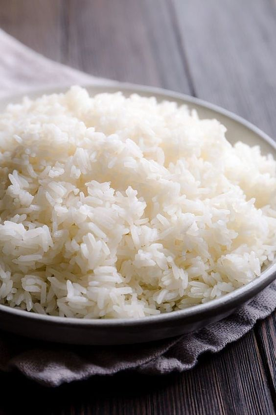
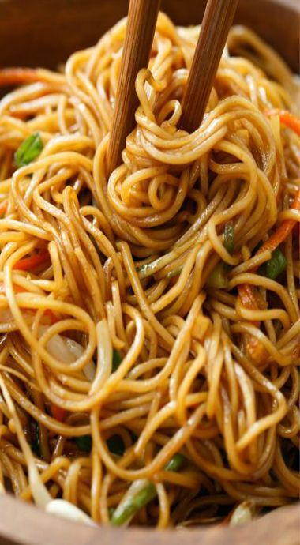
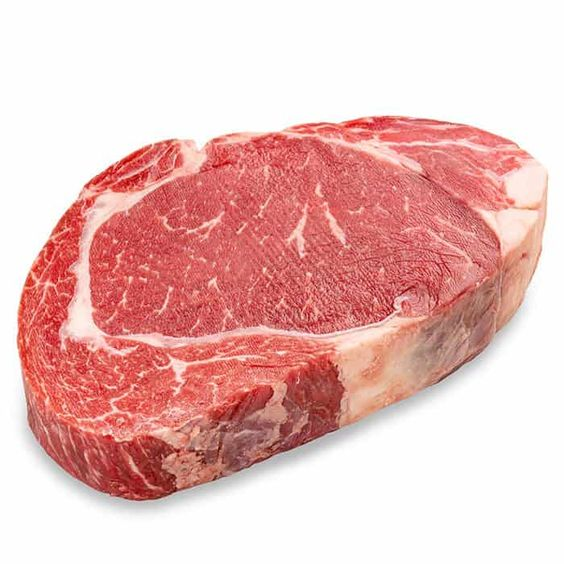
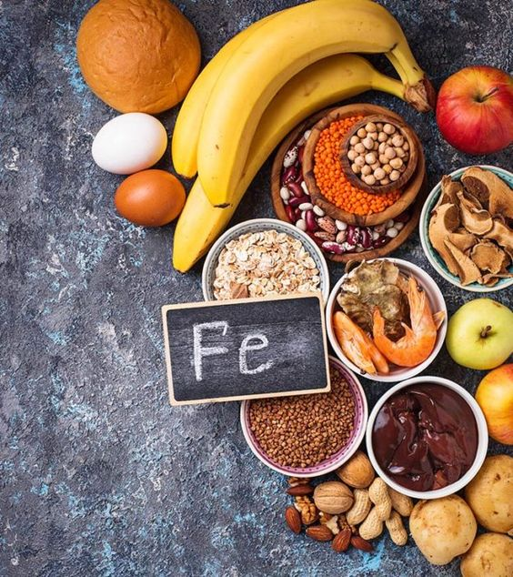
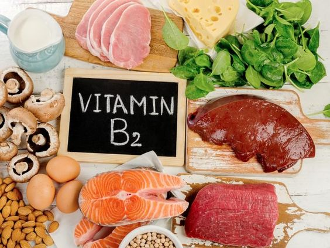
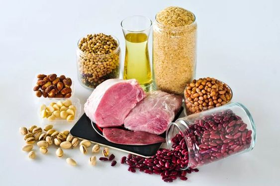

six classes of food
food is any liquid or solid substance that nourishes the body
carbohydrates
- rice
- noodles
- bread
- pasta
Carbohydrates, or carbs, are sugar molecules. Along with proteins and fats, carbohydrates are one of three main nutrients found in foods and drinks
Your body breaks down carbohydrates into glucose. Glucose, or blood sugar, is the main source of energy for your body's cells, tissues, and organs
 
protein
- meat
- fish
- egg
- beans
protein is polypeptide structures consisting of one or more long chains of amino acid residues
hey carry out a wide variety of organism functions, including DNA replication, transporting molecules, catalyzing metabolic reactions, and providing structural support to cells

fats
Fat is a source of essential fatty acids, which the body cannot make itself
Fat helps the body absorb vitamin A, vitamin D and vitamin E
- vegetables
- nuts
- whole eggs
- fish

fiber
Fiber is a type of carbohydrate that the body can't digest
Though most carbohydrates are broken down into sugar molecules called glucose, fiber cannot be broken down into sugar molecules, and instead it passes through the body undigested.
- oranges
- pears
- currants
- onion

minerals
Minerals are substances naturally formed in the Earth
Minerals are typically solid, inorganic, have a crystal structure and are formed by geological processes naturally
- calcium
- iron
- potassium
- zinc 

vitamins
Vitamins and minerals are micronutrients required by the body to carry out a range of normal functions
However, these micronutrients are not produced in our bodies and must be derived from the food we eat
- riboflavin
- thiamine
- niacin
- biotin  